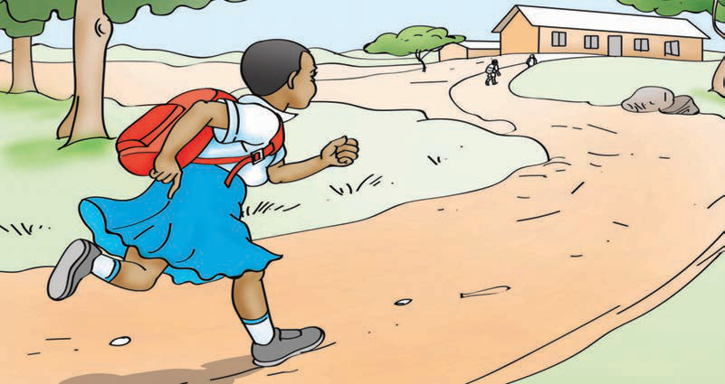
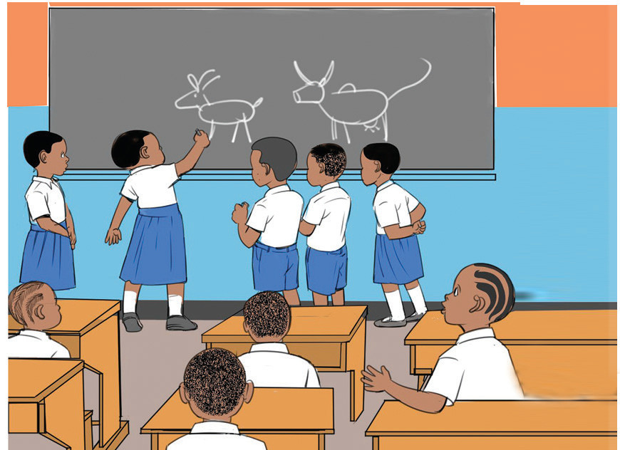

Kielelezo namba 1: Mwanafunzi akikimbia kuwahi shuleni
Kufanya na kumaliza kazi zote zinazohusiana na masomo unapokuwa darasani, kama inavyoonekana katika Kielelezo namba 2, ni kuonesha matendo ya kuthamini sheria shuleni.

Kielelezo namba 2: Wanafunzi wakifanya kazi darasani
Aidha, kuwatii walimu, watu waliokuzidi umri na kutopigana na wenzako kunaonesha kuthamini utii wa sheria shuleni.
Historia ya Tanzania na Maadili STD 3 PB Final.indd 61
29/11/2024 17:14